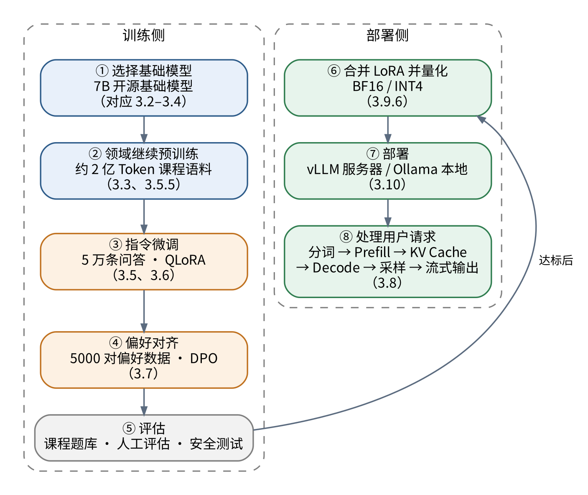

3.11 综合案例：一个 7B 课程问答模型的诞生
前面各节分别讨论了预训练、微调、对齐和推理。本节通过一个完整的案例，把这些知识串联起来。假设某高校希望为一门专业课程构建一个课程问答助手：学生可以随时提问课程中的概念、公式和习题思路，模型给出准确、清晰的解答，并部署在学校自己的服务器上，以保证数据不外流。整个流程如图 3-28 所示，以下逐步说明每一步做什么、用到哪些技术、需要多少资源。

图3-28 课程问答模型从训练到部署的完整流程
为使估算具体，本节以 Qwen2.5-7B 的结构参数为例（实际参数量约 76 亿，28 层，4 个 KV 头，每头维度 128）。
3.11.1 第一步：选择基础模型，而不是从零预训练
从零预训练一个 7B 模型需要多少资源？按 3.4.5 节的方法估算：若使用 2 万亿 Token 训练，计算量约为
\[C \approx 6 \times 7 \times 10^{9} \times 2 \times 10^{12} = 8.4 \times 10^{22}\ \text{FLOPs}\]
在 256 张 A100 上，按每卡有效算力 125 TFLOPS（MFU 约 40%）计算，需要约 \(8.4 \times 10^{22}/\left( 256 \times 1.25 \times 10^{14} \right) \approx 2.6 \times 10^{6}\) 秒，即约 30 天；这还不包括数据准备、调试和故障恢复的开销。对于一所高校的一门课程而言，这样的投入显然没有必要。
因此，合理的做法是选择一个已经完成预训练的开源基础模型，把它作为起点。这正体现了 3.1 节所说的”预训练一次投入、多次复用”。选择时主要考虑：模型的中文能力和与课程相关的知识水平、模型许可证是否允许所需的使用方式、模型规模与可用硬件是否匹配。
3.11.2 第二步：领域继续预训练
如果课程涉及大量通用模型不熟悉的专业知识，可以先收集教材、讲义、课程笔记、相关论文等无标注文本，按 3.3 节的流程清洗、去重后，进行继续预训练，为模型补充领域知识。
假设整理出约 2 亿 Token 的课程语料，计算量约为 \(6 \times 7 \times 10^{9} \times 2 \times 10^{8} = 8.4 \times 10^{18}\) FLOPs，在 8 张 A100 上约需 \(8.4 \times 10^{18}/\left( 8 \times 1.25 \times 10^{14} \right) \approx 8400\) 秒，即两个多小时。由于是全参数训练，模型状态约需 \(16 \times 7.6 \approx 122\) GB（见 3.4.6 节），需要借助 ZeRO-3 或 FSDP 分摊到 8 张卡上，每卡约 15 GB。为了避免灾难性遗忘，通常还会在课程语料中混入一定比例的通用语料，并使用较小的学习率。
3.11.3 第三步：指令微调
数据构造。 指令数据可以综合 3.5.4 节介绍的几种方法：把教材中的例题和课后习题整理成”问题—解答”对；以教材章节为参考材料，让更强的大模型生成多样化的问答；再由助教对生成的数据进行抽查和修改。假设最终得到 5 万条问答，平均每条约 500 个 Token。此外，再混入约 20% 的通用指令数据，以保持模型的通用对话能力。所有数据都按照模型的对话模板拼接，训练时只在回答部分计算损失（3.5.3 节）。
训练配置。 采用 QLoRA（3.6.8 节）：基础模型以 NF4 量化加载，在全部线性层上添加 \(r = 16\) 的 LoRA 模块，可训练参数约 4000 万个。按 3.6.9 节的估算，模型相关的显存约 4～5 GB，加上开启激活重计算后的激活值，一张 24 GB 的消费级显卡即可完成训练。
训练时间。 5 万条 × 500 Token × 3 个轮次，共约 \(7.5 \times 10^{7}\) 个 Token。计算量的上限约为 \(6 \times 7 \times 10^{9} \times 7.5 \times 10^{7} \approx 3.2 \times 10^{18}\) FLOPs（LoRA 省去了大部分权重梯度的计算，实际计算量要更少）。若单卡有效算力约 50 TFLOPS，约需 18 小时，一天之内即可完成。
3.11.4 第四步：偏好对齐
指令微调后的模型已经能够回答课程问题，但回答的详略、讲解方式未必符合教学需要。例如，学生问作业题时，我们可能希望模型引导思路，而不是直接给出最终答案。这类”风格和行为”上的要求，适合通过偏好对齐来实现。
具体做法是：准备约 5000 个问题，让 SFT 模型对每个问题生成两个不同的回答；由助教按照预先制定的标准（准确性、讲解清晰度、是否符合教学要求）选出较好的一个，得到 5000 对偏好数据。若人力有限，也可以按照同样的标准，让更强的大模型充当评判者（RLAIF 的思路），再由助教抽查。然后使用 DPO（3.7.5 节）在 SFT 模型的基础上继续训练，只需要策略模型和参考模型两个模型，同样可以用 LoRA 在单卡上完成。
3.11.5 第五步：评估
在部署之前，必须对模型进行系统的评估：
- 准确性：用往年试题等没有出现在训练数据中的题目构成测试集（注意防止 3.3.5 节所说的数据污染），比较基础模型、SFT 模型和 DPO 模型的正确率；
- 人工评估：请助教和学生对一批真实问题的回答进行盲评；
- 通用能力：在通用基准上检查模型是否出现了明显的能力退化；
- 安全性：检查模型面对不当请求时能否正确拒绝，以及微调是否削弱了原有的安全对齐（3.5.5 节）。
只有在各项指标达到预期后，才进入部署阶段；否则，需要回到数据或训练环节进行调整。
3.11.6 第六步：合并与量化
训练得到的 LoRA 模块可以按照 \(W = W_{0} + \frac{\alpha}{r}BA\) 合并到原始权重中（3.6.6 节），得到一个与原模型结构完全相同、以 BF16 存储的完整模型，约 15 GB。根据部署方式的不同，再选择合适的量化方案（3.9.6 节）：
- 在服务器上用 vLLM 部署时，可以保持 BF16，或使用 AWQ、GPTQ 等方法量化为 4 位，以容纳更多并发请求；
- 如果希望学生也能在自己的电脑上离线使用，可以转换为 GGUF 格式的 Q4_K_M 量化版本（约 4.7 GB），通过 Ollama 或 LM Studio 运行。
3.11.7 第七步：部署与容量估算
假设学校用一台配有一张 24 GB 显卡的服务器，以 vLLM 部署 BF16 版本的模型。按例 3-8 的方法估算容量：
- 设推理框架可使用 90% 的显存，即约 21.6 GB；
- 模型权重约 15.2 GB，框架和临时张量约占 1 GB，剩余约 5.4 GB 可用于 KV Cache；
- 每个 Token 的 KV Cache 约 56 KB，5.4 GB 可容纳约 9.4 万个 Token。若每段对话的上下文按 4096 个 Token 计算，约可同时服务 23 个对话。
单个请求的解码速度上限约为 \(1008\ \text{GB/s} \div 15.2\ \text{GB} \approx 66\) tokens/s（以显存带宽约 1 TB/s 的显卡计，见式（3-41））。如果并发需求更高，可以改用 4 位量化版本：权重降到约 5 GB 后，KV Cache 的可用空间扩大到约 15 GB，并发数可提高到 60 个左右，单请求的解码速度上限也相应提高。如果仍不够，再考虑增加显卡、使用张量并行。
3.11.8 第八步：处理一次用户请求
部署完成后，一名学生在网页上提问”什么是 KV Cache？“，系统内部依次发生以下过程：
- 服务端把系统提示词和学生的问题按对话模板拼接，由分词器转换为约 100 个 Token；
- 推理引擎把这个请求加入连续批处理队列（3.9.3 节），并通过 PagedAttention 为它分配 KV Cache 块（3.9.4 节）；如果系统提示词与其他请求相同，可以直接复用前缀缓存；
- 预填充：并行处理这约 100 个输入 Token，建立初始的 KV Cache，生成第一个输出 Token，学生在不到一秒内就看到回答开始出现（TTFT）；
- 解码：逐个生成后续 Token，每一步读取模型权重和 KV Cache，并把新 Token 的 K、V 追加到缓存中（3.8.3 节）；
- 每一步按照设定的解码策略选择 Token。由于这是知识问答，采用较低的温度（如 \(T = 0.3\)）和 top-p 采样，以保证回答准确、稳定（3.8.6 节）；
- 生成的 Token 被实时转换回文字，以流式方式推送到学生的屏幕上，直到生成结束标记。若回答约 300 个 Token、TPOT 约 20 毫秒，整个回答约 6 秒完成（式（3-42））。
表 3-21 汇总了整个案例中各步骤所用的技术和资源。
表3-21 课程问答模型案例的各步骤汇总
| 步骤 | 关键技术 | 主要资源 | 产物 | 对应章节 |
|---|---|---|---|---|
| ① 选择基础模型 | 预训练（复用已有成果） | — | 7B 基础模型 | 3.2～3.4 |
| ② 继续预训练 | 数据清洗、ZeRO-3 | 8 张 A100，约 2～3 小时 | 领域基础模型 | 3.3、3.4、3.5.5 |
| ③ 指令微调 | 指令数据构造、损失掩码、QLoRA | 1 张 24 GB 显卡，约 1 天 | 课程指令模型 | 3.5、3.6 |
| ④ 偏好对齐 | 偏好数据、DPO（或 RLAIF） | 1 张 24 GB 显卡 | 对齐后的模型 | 3.7 |
| ⑤ 评估 | 测试集、人工评估、安全测试 | 少量 GPU 与人力 | 评估报告 | 3.3.5、3.5.5 |
| ⑥ 合并与量化 | LoRA 合并、AWQ / GGUF 量化 | 单机即可 | 可部署的模型文件 | 3.6.6、3.9.6、3.10.4 |
| ⑦ 部署 | vLLM、连续批处理、PagedAttention | 1 张 24 GB 显卡 | 在线问答服务 | 3.9、3.10 |
| ⑧ 处理请求 | Prefill、KV Cache、Decode、采样 | — | 流式输出的回答 | 3.8 |
从这个案例可以看到，借助开源基础模型和参数高效微调，构建一个可用的领域模型所需的资源已经从”数百张 GPU、数月时间”降低到了”几张 GPU、几天时间”。而决定最终效果的关键，往往不再是算力，而是数据的质量和评估的严谨程度。